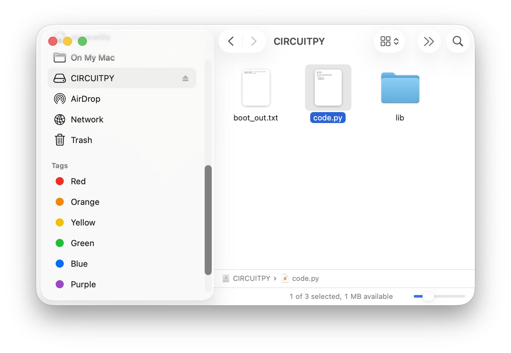

Generating Frequencies and Playing a Tune
Your board has a speaker, and a speaker plus a list of numbers is a music box. By the end of this lab, your Circuit Playground Express will play a song you picked.
Overview
You'll play a single tone on the board's built-in buzzer, then string tones together into a melody with a list and a for-loop, and finally use tuples to give each note its own duration so the tune actually sounds like the song.
Builds on: Roulette Wheel — you'll reuse the setup-then-infinite-loop program structure.
Before you start
Connect your Circuit Playground Express and open code.py on the
CIRCUITPY drive. If you don't see the drive, ask for help before
continuing.
You've got it when…
- The buzzer plays a single tone at a frequency you chose.
- Your program plays a melody from a list of notes with a for-loop.
- Each note plays for its own duration, stored in a tuple with the note.
Collaboration & AI
Work: On your own. Ask a neighbor for a hand if you're stuck, but the code you submit should be yours.
AI — AIAS Level 2, AI Planning: You may search the Internet or ask an AI for the names of the notes in a melody you like. The program that plays them is yours to write. What the levels mean.
Playing a Tone
A piezo buzzer (a type of speaker) is built into the board. We'll play a tone on the buzzer.
-
Import the libraries we'll need.
-
Play a tone on the buzzer at a frequency of 440 Hz for 1 second.
Frequency is how many times a sound wave vibrates (or wiggles) every second, and it's measured in units called Hertz (Hz). When something vibrates faster (higher frequency), we hear a higher-pitched sound, like a whistle; when it vibrates more slowly (lower frequency), we hear a lower-pitched sound, like a drum.
Tip
Try this website to generate different tones and see their frequencies.
Making Music
Musical notes are just specific frequencies — for example, the note A above middle C vibrates 440 times per second (440 Hz). The frequencies can be matched to musical notes to play a tune.
Write a program that will play a song on the piezo speaker. You may search the Internet or ask an AI for the names of the notes of a melody for a song you like, then look up their frequencies in the table below.
-
Define some variables for the musical notes you need for your song. For example, these are the notes we would need for Twinkle, Twinkle Little Star:
-
In the setup portion of your program (before the infinite loop), create a list of the musical notes to play in order.
-
Create a for-loop to play each note.
Note Frequency Table — open to look up your notes
| Note | Frequency (Hz) |
|---|---|
| G#9/Ab9 | 13289.75 |
| G9 | 12543.85 |
| F#9/Gb9 | 11839.82 |
| F9 | 11175.3 |
| E9 | 10548.08 |
| D#9/Eb9 | 9956.06 |
| D9 | 9397.27 |
| C#9/Db9 | 8869.84 |
| C9 | 8372.02 |
| B8 | 7902.13 |
| A#8/Bb8 | 7458.62 |
| A8 | 7040 |
| G#8/Ab8 | 6644.88 |
| G8 | 6271.93 |
| F#8/Gb8 | 5919.91 |
| F8 | 5587.65 |
| E8 | 5274.04 |
| D#8/Eb8 | 4978.03 |
| D8 | 4698.64 |
| C#8/Db8 | 4434.92 |
| C8 | 4186.01 |
| B7 | 3951.07 |
| A#7/Bb7 | 3729.31 |
| A7 | 3520 |
| G#7/Ab7 | 3322.44 |
| G7 | 3135.96 |
| F#7/Gb7 | 2959.96 |
| F7 | 2793.83 |
| E7 | 2637.02 |
| D#7/Eb7 | 2489.02 |
| D7 | 2349.32 |
| C#7/Db7 | 2217.46 |
| C7 | 2093 |
| B6 | 1975.53 |
| A#6/Bb6 | 1864.66 |
| A6 | 1760 |
| G#6/Ab6 | 1661.22 |
| G6 | 1567.98 |
| F#6/Gb6 | 1479.98 |
| F6 | 1396.91 |
| E6 | 1318.51 |
| D#6/Eb6 | 1244.51 |
| D6 | 1174.66 |
| C#6/Db6 | 1108.73 |
| C6 | 1046.5 |
| B5 | 987.77 |
| A#5/Bb5 | 932.33 |
| A5 | 880 |
| G#5/Ab5 | 830.61 |
| G5 | 783.99 |
| F#5/Gb5 | 739.99 |
| F5 | 698.46 |
| E5 | 659.26 |
| D#5/Eb5 | 622.25 |
| D5 | 587.33 |
| C#5/Db5 | 554.37 |
| C5 | 523.25 |
| B4 | 493.88 |
| A#4/Bb4 | 466.16 |
| A4 concert pitch | 440 |
| G#4/Ab4 | 415.3 |
| G4 | 392 |
| F#4/Gb4 | 369.99 |
| F4 | 349.23 |
| E4 | 329.63 |
| D#4/Eb4 | 311.13 |
| D4 | 293.66 |
| C#4/Db4 | 277.18 |
| C4 (middle C) | 261.63 |
| B3 | 246.94 |
| A#3/Bb3 | 233.08 |
| A3 | 220 |
| G#3/Ab3 | 207.65 |
| G3 | 196 |
| F#3/Gb3 | 185 |
| F3 | 174.61 |
| E3 | 164.81 |
| D#3/Eb3 | 155.56 |
| D3 | 146.83 |
| C#3/Db3 | 138.59 |
| C3 | 130.81 |
| B2 | 123.47 |
| A#2/Bb2 | 116.54 |
| A2 | 110 |
| G#2/Ab2 | 103.83 |
| G2 | 98 |
| F#2/Gb2 | 92.5 |
| F2 | 87.31 |
| E2 | 82.41 |
| D#2/Eb2 | 77.78 |
| D2 | 73.42 |
| C#2/Db2 | 69.3 |
| C2 | 65.41 |
| B1 | 61.74 |
| A#1/Bb1 | 58.27 |
| A1 | 55 |
| G#1/Ab1 | 51.91 |
| G1 | 49 |
| F#1/Gb1 | 46.25 |
| F1 | 43.65 |
| E1 | 41.2 |
| D#1/Eb1 | 38.89 |
| D1 | 36.71 |
| C#1/Db1 | 34.65 |
| C1 | 32.7 |
| B0 | 30.87 |
| A#0/Bb0 | 29.14 |
| A0 | 27.5 |
Tuples
That's not bad, but some notes should play longer than others. We'd like to store the duration, or how long each note should be played, with the note itself.
A Python tuple is a way to store a group of items together, like a list,
but with one important difference: once you create it, you can't change it.
Tuples are written using parentheses, like (1, 2, 3) or (C, D, E). They're
useful when you want to keep things fixed, such as storing coordinates, RGB
colors, or musical notes that shouldn't be accidentally changed in your
program.
We can use a tuple to store a note and its duration like this:
We can access the items in the tuple by assigning them to two variables like this:
We can make a list of these note/durations and loop over them to play them one at a time.
song = [(C, 0.5), (G, 0.25), (F, 0.25)]
for item in song:
note, time = item
cp.play_tone(note, time, cp.SQUARE_WAVE)
Challenges
- Tuples for real. Update your list of notes to be a list of tuples, each storing the note and its duration.
- Take a rest. Add a rest to your notes by defining a new variable named
RESTwith the frequency set to0. - Encore. Wrap the for-loop in an infinite loop so your song begins playing again continuously after it ends.
- Light show. Using what you learned in the previous assignment, make the LED lights light up with your notes. Use a different light for each note in your song to make an effect like a finger on piano keys.
Turn It In
- Submit your
code.pyfile. You'll find it on the CIRCUITPY drive that appears when your board is connected and turned on.

How It's Graded
This lab is worth up to 4 points. One score covers everything you turn in.
| Score | What it looks like |
|---|---|
| 4 — Excellent | Your code.py plays a song a classmate could name — notes stored as named variables, the melody in a list of (note, duration) tuples, and one for-loop playing the whole thing with durations that make it sound like the actual song. |
| 3 — Above Average | A melody plays from a list with a for-loop, with a minor slip — every note the same length because the tuples never made it in, or a wrong note or two in the chorus. |
| 2 — Average | The single 440 Hz tone works but the melody is a fragment, or the song plays from copy-pasted play_tone lines instead of a loop over the list. |
| 1 — Below Average | The buzzer never makes a sound, or code.py doesn't run. |
| 0 — Failing | No code.py submitted. |